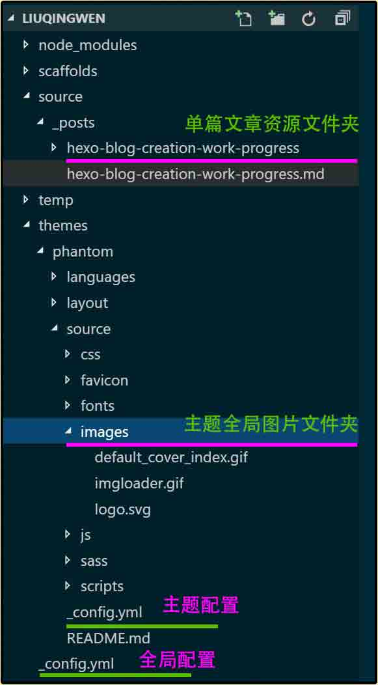

「Hexo On Win10」新手搭建博客过程

一、前言
现在博客框架真是多之又多， Wordpress ， Jekyll ， Hexo ， Octopress ，曾经我就简单尝试过 Worldpress ，过去的痛点已经忘却，开始新的历（tong）程（ku）吧！对于新手来说，直接、强大、稳健的框架最好不过，那么我推荐一套 Hexo 框架，这是一个最近很热门的博客框架，按照官方的说法是：
Hexo:
A fast, simple & powerful blog framework
快速，简单，而且强大！对，你值得拥有。 :smile: 当然，对于我这样的新手来说并不是吹牛皮那么简单，在搭建博客的过程中确实遇到了不少问题，没有任何前端经验的我一度想着放弃或者干脆放个 .txt 文本作为博客访问数据算了！还好，我做到了，于是有了这么一篇具有里程碑意义的文章，哈哈！在这里我把自己遇到的一些问题和解决方法例举出来，方便日后查阅或者能够帮助到其他新手朋友们愉快的搭建博客系统。
二、问题列表
在解决问题之前，我自己主要参考了一篇来自同一个小密圈子里的朋友的文章，这篇文章可以肯定的说是业界的良心，新手的福音！ :joy: 传送门：最适合新手的 GitHub + Hexo 「大话」博客搭建教程，同时，我自己的博客系统暂时并没有发布到 GitHub 上，所以相关问题请参考这位朋友的文章或者 Google 吧！另外，一些细节问题比如安装 Nodejs ， NPM ， Git ， Hexo ，最好是参考官方网站文档一步一步进行。
- NPM 不能正常使用
- Git 不能正常使用
- Blog 图片路径混乱
- Hexo 自定义参数
三、解决方法
1. NPM 不能正常使用
生活在天朝就是有很多莫名其妙的问题，没解决前总是东寻西觅，看到解决方法后往往淡然处之：这就是生活吧！言归正传，在使用 Hexo 的主题过程中，有些主题需要使用 SCSS 作为 CSS 的渲染工具（具体我也不懂），那么在你的博客路径下执行 npm install --save hexo-renderer-scss 进行安装 SCSS ，然后你会得到这样的问题：
1 | HTTP error 500 Domain Not Found |
解决办法：直接传送门吧：安装hexo-renderer-sass最终解决方案，dalao告诉我们直接执行以下命令：
1 | npm install -g cnpm --registry=https://registry.npm.taobao.org |
以后就愉快地使用 cnpm 取代 npm 吧！
2. Git 不能正常连接 GitHub
这个问题和上述 NPM 的问题是一样一样的，刚开始使用 Hexo 进行主题 Clone 的时候，发现根本不能用，只能手动下载 Zip 文件解压使用了。如果你一定要用 Git 而且又是在 Windows 上的话，你必须先安装 Bash on ubuntu on Windows ， Microsoft 微软官网有详细的安装指南： Installation Guide ，安装的前提是 Window10 的更新程序，这里有必要对类似我这种不熟悉 Linux 系统的朋友说一下， Windows 命令行 CMD 中的盘符 C: 对应 Linux 中的是 /mnt/c ，别弄错了哦，如有疑问，参考官网： Frequently Asked Questions ，嘿嘿。 :grimacing:
安装好高大上的 Bash on ubuntu on Windows 后，还需要生成 GitHub 需要的 SSH Key 才能使用 Git ，这是为什么我们需要 Bash 的原因（ SSH Key 怎么直接在 Windows 上使用我不清楚，知道的朋友给我留言，感谢！）。不过这时候你在 Windows 上的 Git 并不能用于 Bash on ubuntu on Windows ，直接使用命令行： apt-get install git-all 获取 Git 吧！之后，关于生成 SSH Key 和上传到 GtiHub ，开头我说的那篇文章有详细说明：最适合新手的 GitHub + Hexo 「大话」博客搭建教程 ，唯一注明的一点是密钥文件在 Windows 中的位置：
1 | # on Linux: |
3. Hexo 博客的图片路径混乱
相信博客主题中关于图片路径问题肯定有很多新手朋友遇到过，写文章难免需要一些自己上传的图片，即使你用的图床，你在使用某些主题设置中还是需要设置图片路径的，比如我的主题就需要设置封面图片： cover_index: your_cover_image_path.jpg 。但是当你设置好后，你会发现根本图片不会按照你所期望那样正常显示出来，这里就需要说明一下 Hexo 中图片路径的设置了。

- 写文章时单独使用的图片相对路径设置
直接打开博客根目录下的配置文件： _config.yml ，设置： post_asset_folder: true 这样在每次生成写文章 hexo new <post-article-title> 的时候会生成和文章同名字的资源文件夹，图片存放在这个目录可以直接使用相对路径。
1 | # Writing setting (_config.yml) |
- 任何页面引用全局图片相对路径设置
如果你的博客页面里引用了全局图片，比如每篇文章页面或者关于页面、分类页面等都显示一个默认的 Logo 或者 Cover 之类的图片，这个图片一般是在主题的配置文件 themes/<your-theme>/_config.yml 中设置的。一般设置成相对路径是没问题的，比如我的主题默认封面图片设置：
1 | # config in "themes/<my-theme>/_config.yml" |
但是发现文章页面图片显示异常。这个时候用浏览器检查一下图片的显示地址，发现是我的图片路径不对，究其原因是我使用了服务器空间的非根目录存放博客：
1 | # config in "_config.yml" |
所以，解决办法是手动修改主题下的相关页面的图片路径，比如我的主题目录下的文件 layout/_partial/article-index.ejs 中路径加上 config.root ：
1 | <% if(item.cover_index){ %> |
- 由 JS 动态更改的图片路径设置
除了以上路径设置之外，还有一个可能遇到的问题是：文章中的路径被自己的 JS 库或者某个懒加载 Renderer 功能模块动态更改为配置中的图片路径，导致最后的显示异常。打个比方，在我的文章中某个图片  在发布文章后都会被 Renderer 改成临时显示地址 <img src="temp-path-to/temp-image.jpg" data="path-to/real-image.jpg"> ，这个临时地址就是在我的设置中设置的相对路径地址： temp_image_path: temp-path-to/temp-image.jpg ，这个时候这个临时图片就会显示异常：
1 | <!-- img src, the unexpected one --> |
浏览器显示的是上方带有博客路径的地址，实际我需要的是统一全局地址的，这个时候怎么解决呢？其实，我也没有办法（如果你有好方案请告知，谢谢！ :blush: ），直接使用绝对地址了：
1 | # image path config |
Hexo 自定义参数
关于自定义参数并不是什么问题，我建议大家在使用他人的博客主题的时候，找到博客主题的官方页面，一般主题开发者都会详细说明主题中参数的相关配置，如果需要自己定义一些参数方便页面的显示、跳转、或者其他功能，也很简单。在仔细参考了主题文件的一些代码后，配置参数可以分别写到相应的文件以及做相应的代码引用：
1 | # your custom configuration parameters |
1 | # your custom configuration parameters |
1 | # your custom configuration parameters |
很简单吧，配置对应引用： config theme item 就可以了，注意 Front-matter 是位于你的每篇博客文章的开头哦，具体参考官方文档吧。
四、总结
所以就是那么复杂而又简单，最后还是那句话，建议多参考官方文档说明哦，祝你顺利搭建自己的博客，写出一篇又一篇好文章！有什么问题请给我留言，互相学习，天天向上！ :wink:
参考：
最适合新手的 GitHub + Hexo 「大话」博客搭建教程： https://smartbeng.github.io/2017/03/26/blogFinish/
安装hexo-renderer-sass最终解决方案： https://github.com/tufu9441/maupassant-hexo/issues/225
Bash on ubuntu on Windows： (https://msdn.microsoft.com/en-us/commandline/wsl/about
Hexo Docs 官方文档： https://hexo.io/docs/
Connecting to GitHub with SSH： https://help.github.com/articles/connecting-to-github-with-ssh/
Error: Permission denied (publickey)： https://help.github.com/articles/error-permission-denied-publickey/